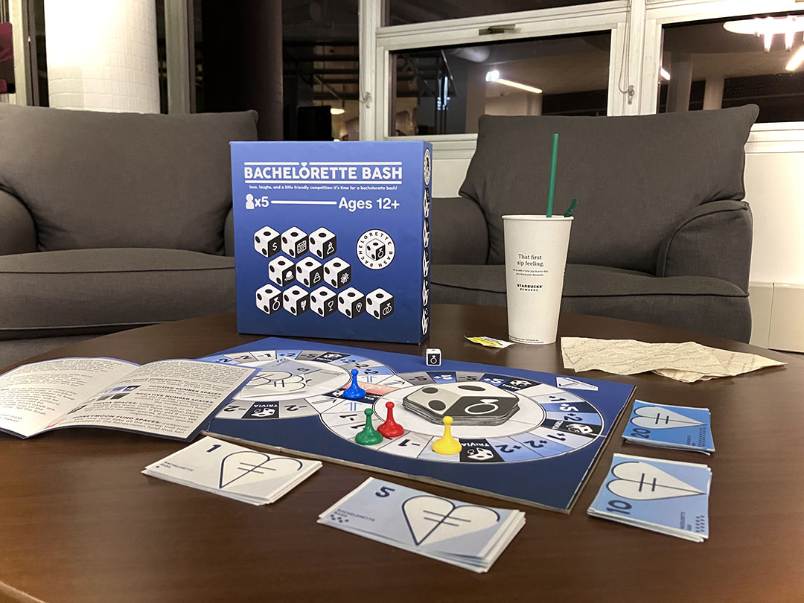
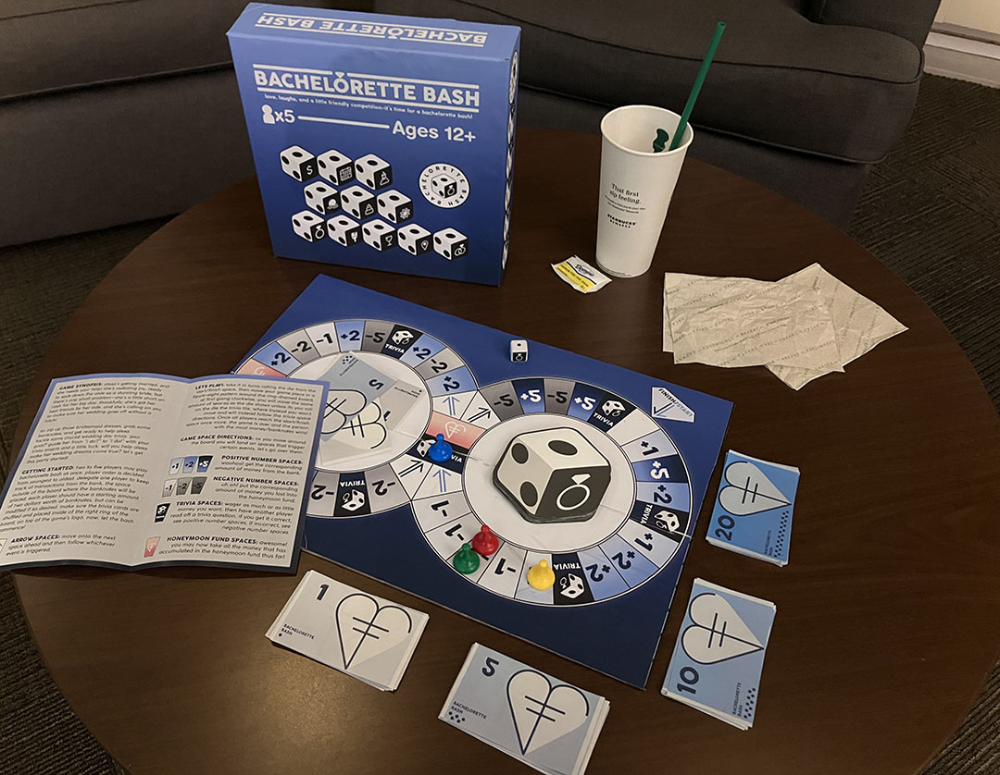
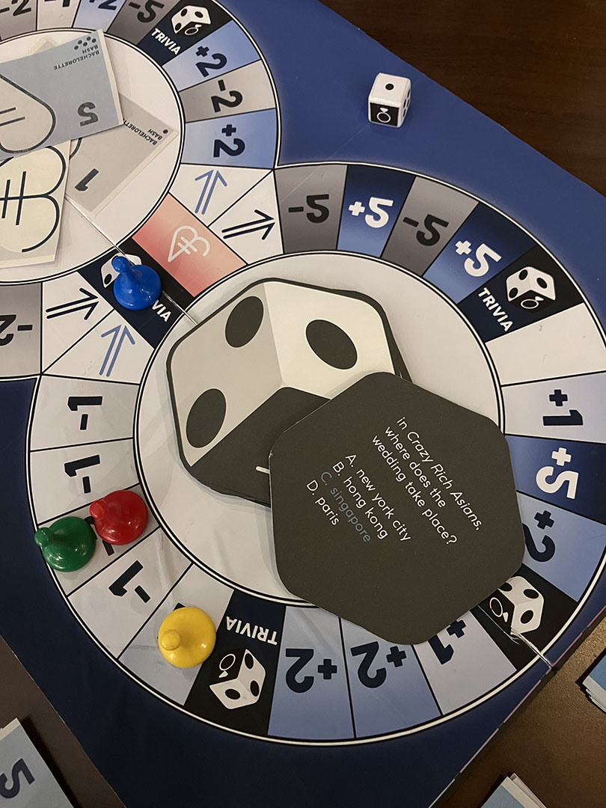
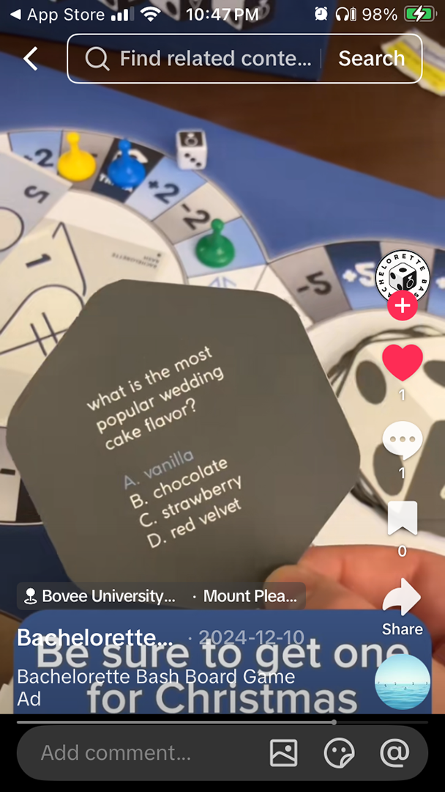
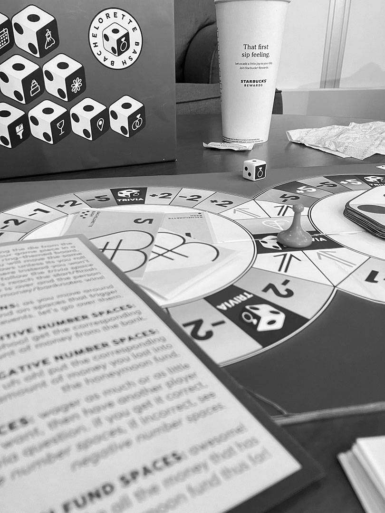

Bachelorette Bash is a comprehensive tabletop game designed to bring a joyous, competitive edge to pre-wedding celebrations. The goal was to create a cohesive visual identity that spans across multiple touchpoints: a custom-designed game board, specialized trivia cards, cash, the instructional manual, and packaging.


The aesthetic is clean and organized, utilizing a systematic color palette and bold iconography inspired by and celebrating my brother and sister-in-law’s wedding which happened during the creation of this project. I wanted the game to be easily navigable so as to be enjoyed by a large age range. I achieve this by creating a balanced layout that handles complex information (rules, trivia, and scoring) without overwhelming the player with everything all at once.


The process involved numerous iterations of prototypes and sketches to determine the most effective final concept. The iconography is made to be intuitive using wedding-themed symbols to represent different game actions. The final physical creation I made (shown in the media) demonstrates the design's tactile experience with shelf-ready quality. I especially was inspired by Dutch banknote designs when it came to creating my own play money.
